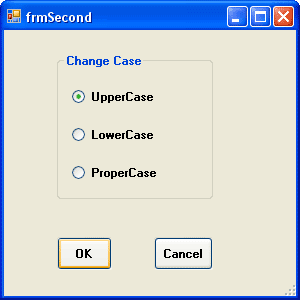
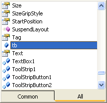
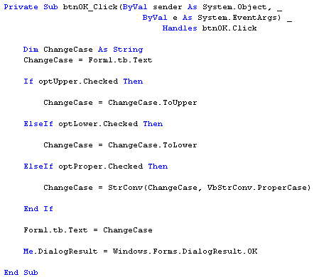

Getting at Values on other Forms
This lesson follows on from the previous two lessons: How to create a second form
The form with OK and Cancel buttons on it is not doing much good. We need it do some work for us. Let's turn the form into a Change Case dialogue box.
Design a Form like the one in the following image (this is frmSecond):

When you've designed your form, click back on Form1 and add a Textbox to it. When the button on Form1 is clicked, the dialogue box above will display. You can then select an option button to change the case to Upper, Lower or Proper case. This will happen when the OK button is clicked. Whatever text is in Texbox1 on Form1 will be changed accordingly.
Double click the OK button on frmSecond to access the code. You should have the following:
Me.DialogResult = DialogResult.OK
If you want to refer to Texbox1 on Form1, you can't just do this:
Form1.Textbox1.Text
In previous version of VB, that code would be all right. You're saying "Access the Text property of Textbox1 on Form1." The problem in VB.NET is that forms are Classes. They don't become objects until one is created from a Class. So the frmSecond Class knows nothing about Form1. It has no idea what it is.
The solution is to create a textbox object variable on Form1, and assign Textbox1 to this variable. But this variable has to be something that all Classes in the project can see.
So add this near the top of your code window for Form1 (add it just below the Inherits System.Windows.Forms.Form line, or Public Class Form1):
Public Shared tb As TextBox
We're setting up a variable which we've called tb. A Textbox object is going to be stored in this variable. But notice that the variable is Public Shared. This way, frmSecond will be able to see the variable.
In the Form Load event for Form1, add the following line:
tb = Textbox1
When Form1 loads, the textbox called Textbox1 will be assigned to the tb variable. Now Textbox1 can be seen by frmSecond.
Go back to your code for the OK button on frmSecond. Add the following two lines at the top:
Dim ChangeCase As String
ChangeCase = Form1.tb.Text
We're setting up a String variable called ChangeCase. Whatever text is in Textbox1 of Form1 will then be assigned to the ChangeCase variable. But notice that as soon as you type a full stop after Form1, the tb variable will be available in the pop up list:

The Public variable called tb holds a reference to Textbox1 on Form1. When you type a full stop after the tb, you get a list popping up. The list is all the Properties and Methods that are available to Textbox1. One of these is the Text property.
We now only need to add the code that does the actual converting. So add this below the two lines you already have:
Dim ChangeCase As String
ChangeCase = Form1.tb.Text
If optUpper.Checked Then
ChangeCase = ChangeCase.ToUpper
ElseIf optLower.Checked Then
ChangeCase = ChangeCase.ToLower
ElseIf optProper.Checked Then
ChangeCase = StrConv(ChangeCase, VbStrConv.ProperCase)
End If
Form1.tb.Text = ChangeCase
The three options buttons on our form were called optUpper, optLower and optProper. In the code, we're using an If Statement to see which of these was selected. The one that was chosen will have its Checked property set to True. We then store into the variable ChangeCase the converted text from the textbox. The final line puts the converted text back into Textbox1 on Form1. But you're coding window should look like this:

Note that the DialogResult.OK line is the final line of the code. When you're writing your code, make sure that optUpper, optLower and optProper are changed to whatever you called your Radio Buttons.
When you're finished adding the code, run your programme. Enter some text into Textbox1. Then click the button that brings up the Change Case Dialogue box. Select an option from the three available, and the click OK. The text in Textbox1 should be converted.
Setting and Getting value from one form to another can be quite a tricky process at first. But once you get the hang of it you'll find it's not too difficult.
And that ends this section of this course. There's an awful lot more to learn about Windows Forms, and a bit of experimentation is needed before you become skilled in their use. But in a beginners course, you've learned enough to be going on with.